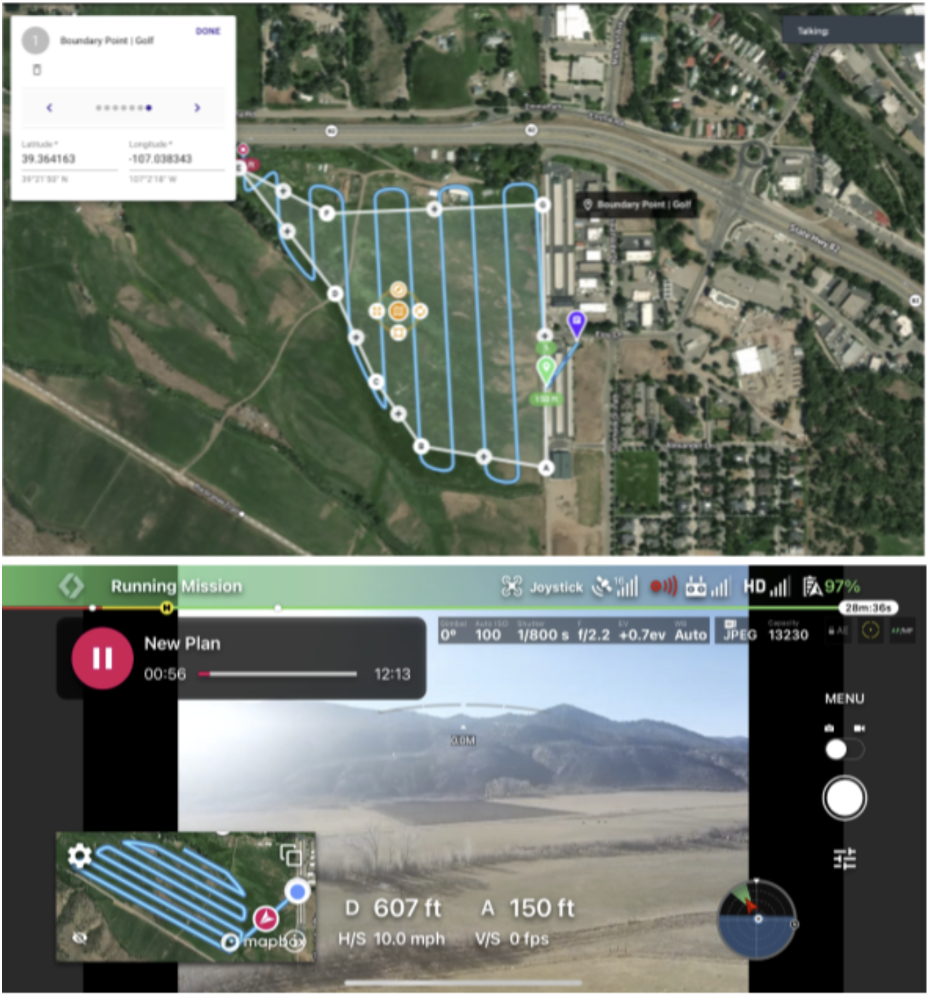
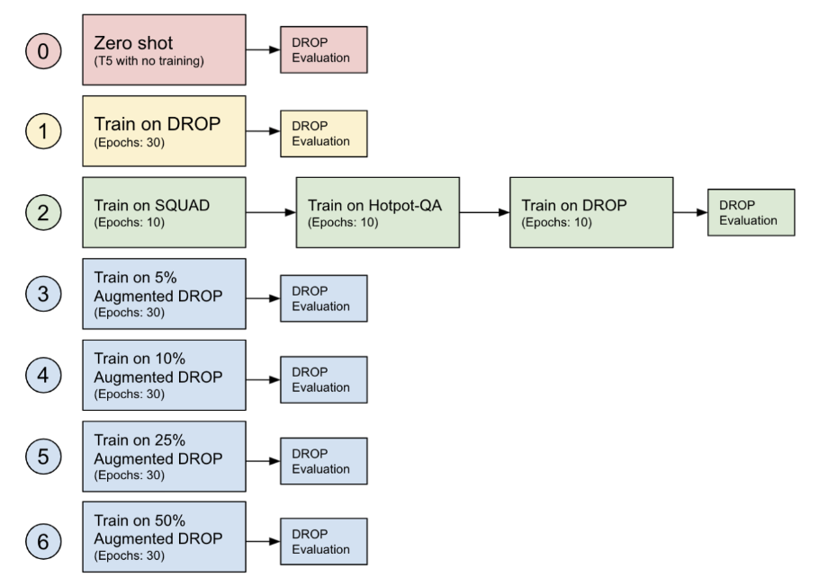
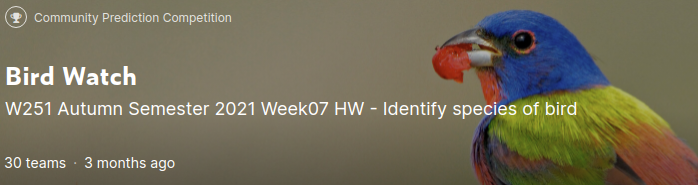

In the final project for the class Deep Learning in the Cloud and at the Edge, my team developed a drone-based application
that allowed a drone to be flown on a predetermined path over any area and perform object detection to identify cattle. As this was a
proof-of-concept and we used a DJI Mavic Pro drone, we were unable to access an on-board API for model deployment and instead performed
the drone run and then transferred the video to a Jetson Nano. From this device, object detection was performed on the video feed and
the output was sent to an AWS instance using MQTT, where it was then mapped. A simple front-end UI allows the user to see the cow locations,
counts, and images with annotations. YOLOv5 was used as the object detection model, and through the exploratory approach of how to best
collect the data we experimented with different datasets and ultimately were able to train a model that performed with over 0.9 mAP on
our holdout test set.

This project was an attempt to find ways of improving T5's performance on a difficult Question Answering task, using the DROP
(Discrete Reasoning Over Paragraphs) dataset as a benchmark. We experimented with transfer learning on a variety of datasets, and
found that we could improve performance by generating our own synthetic Question Answer data. While our synthetic dataset ultimately was
not diverse enough to train the model on it's own, but by augmenting the DROP training data with our synthetic data, we were able to avoid
overfitting and improve performance.

This project was an in-class Kaggle competition requiring accurate image classification on bird photographs in a dataset with 270 different
classes of birds. Using Vision Transformers, I was able to achieve over 98% accuracy on the test set (the best performing model was SWIN).
This was also achieved by applying label smoothing to the cross entropy loss function, a cosine learning rate scheduler, and
stochastic gradient decent with momentum and weight decay.
For this project, we had to predict whether a flight would be at least 15 minutes delayed 2 hours before the scheduled departure using
large datasets of airline flights (all US commercial flights from 2015-2019) and weather data (NOAA data
collected from 2015-2019). Because of the size of the dataset, distributed computing was required (PySpark). The modeling portion of
the pipeline used logistic regression as a baseline, which was improved upon using Gradient Boosted Trees and XGBoost. The computation
was performed in Databricks.
Report notebooks: